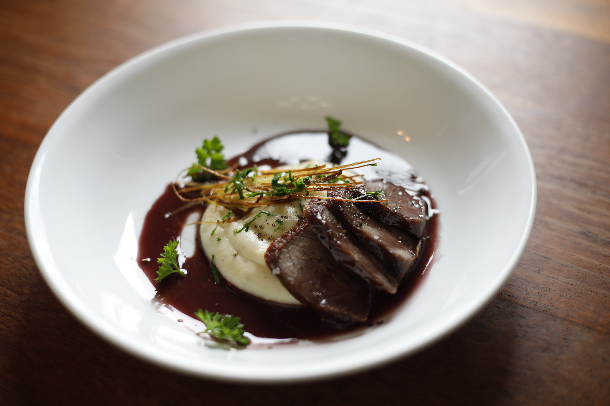
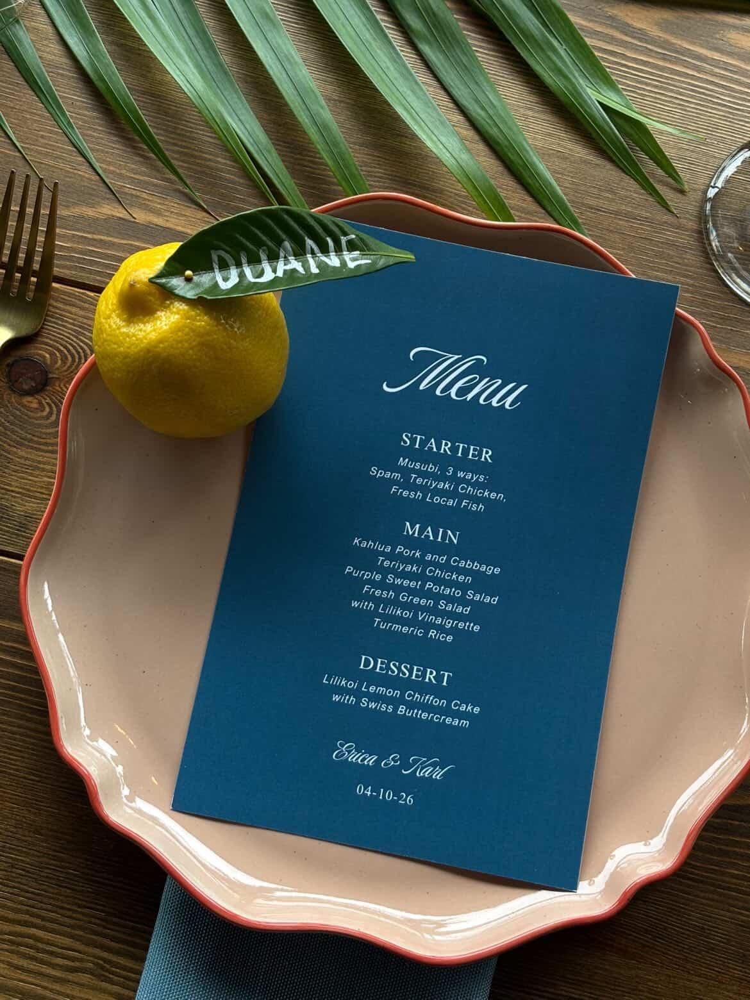
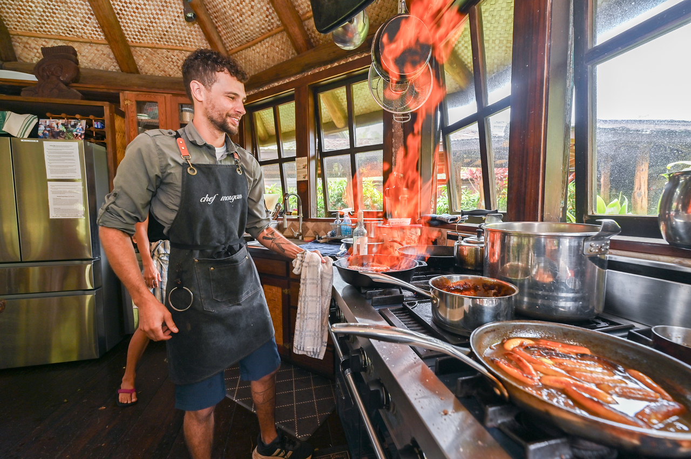
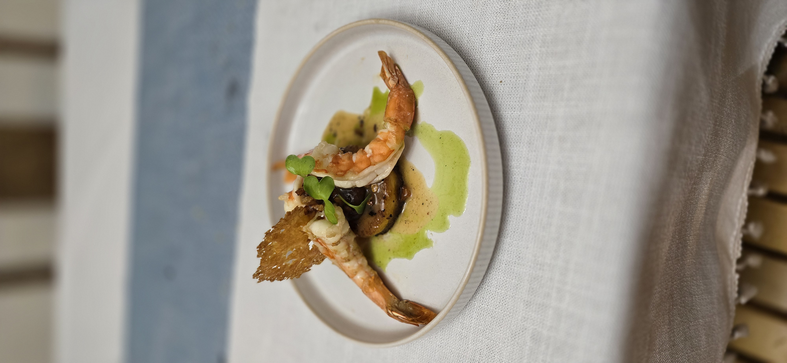
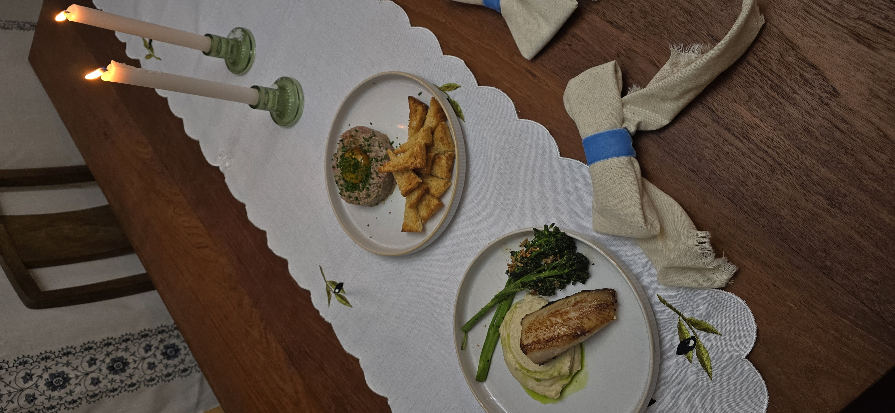

01Private dining
A relaxed, restaurant-level dinner in your home or vacation residence. Multi-course menus, warm service, and no detail left unattended.
Plan a private dinner →
Private dining · Weddings · Retreats
Seasonal, farm-to-table experiences rooted in the farms, waters, and generous spirit of Hawaiʻi Island.
The table, considered
From an intimate dinner at your vacation home to a full wedding weekend, every menu begins with your gathering and what is exceptional on the island right now.
Ways to gather
Each service is custom-built around your guests, setting, dietary needs, and the season.

01A relaxed, restaurant-level dinner in your home or vacation residence. Multi-course menus, warm service, and no detail left unattended.
Plan a private dinner →
02Ingredient-led menus for elopements, wedding weekends, and milestone gatherings—from passed bites to family-style feasts.
Share your celebration → 03
03
Daily dining that follows your rhythm—from nourishing breakfasts to closing-night feasts, with every dietary need considered.
Design a retreat menu →
The chef behind the table
Chef Morgan brings a calm, ingredient-first approach to private dining on Hawaiʻi Island. Every menu balances comfort and discovery—bright island produce, pristine local seafood, and thoughtful technique served with genuine warmth.
The result is food that belongs to the moment: grounded in place, attentive to every guest, and memorable long after the final course.
From recent tables
Seasonal plates, generous tables, and gatherings across Hawaiʻi Island.



The best meal of our trip. Every course felt connected to the island, and Morgan made the entire evening feel effortless.— Private dinner guest, Kona
Good to know
Across Hawaiʻi Island, including Kailua-Kona, the Kohala Coast, Waimea, and Hilo. Destination events may be arranged.
Yes. Vegetarian, vegan, gluten-free, and allergy-aware menus are available with advance notice and a clear conversation about your guests.
For weddings and peak travel seasons, two to six months is ideal. Private dinners may be possible with two to four weeks’ notice.
No. Every date request is personally reviewed. Your event is confirmed only after availability is approved and the proposal and deposit steps are complete.
Begin the conversation
Share the shape of your gathering and your preferred date. Your request will be reviewed personally before any reservation is confirmed.
Human-reviewed availabilityA request is not a booking. You’ll receive a personal reply after the date is reviewed.